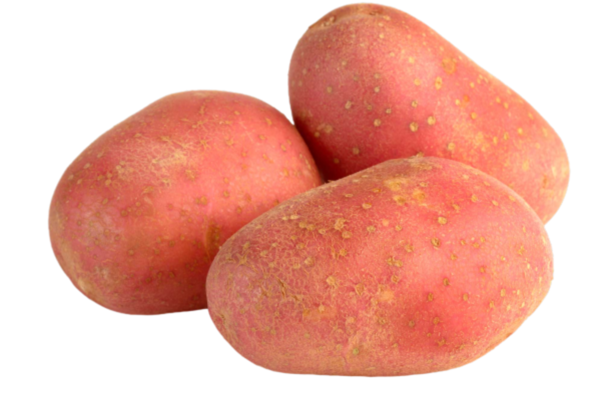
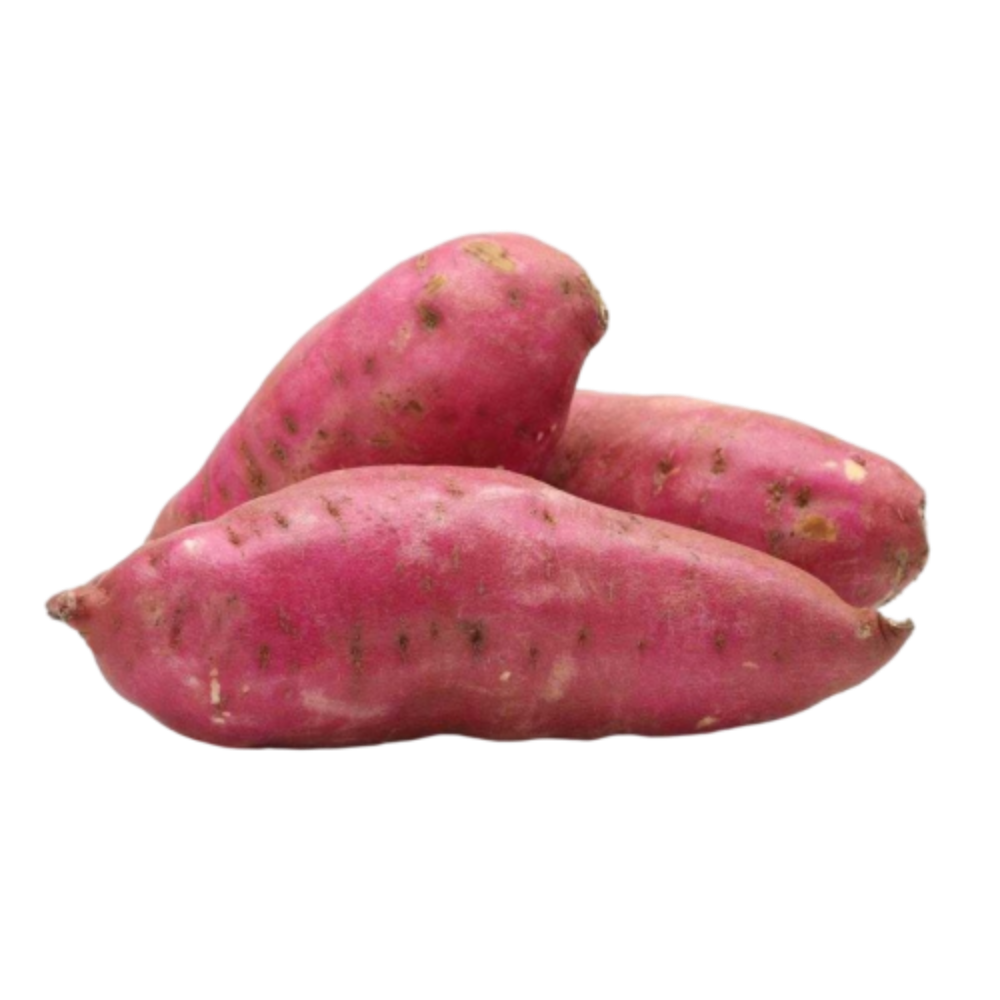
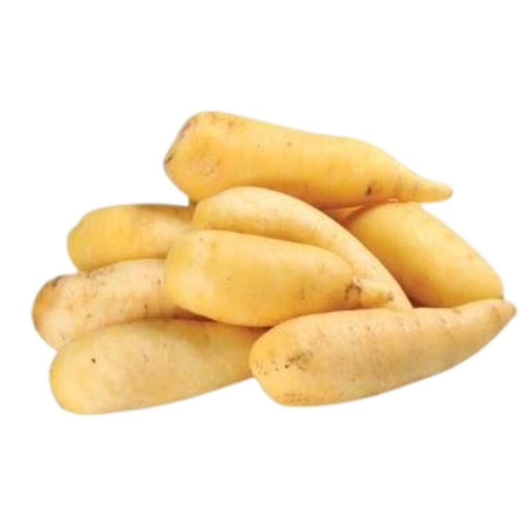
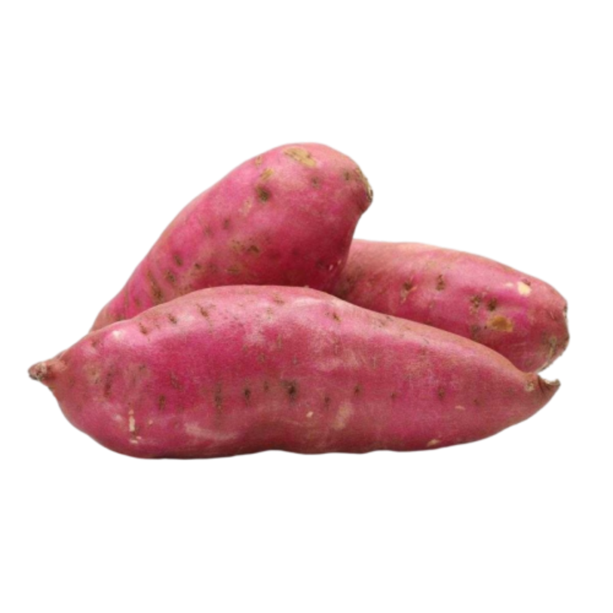
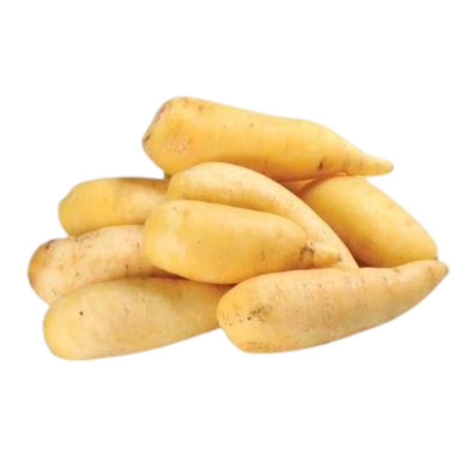

tipos de batata
batata inglesa comumum, a mais comum das batatas sendo encontradas de dungeons, até os mais diversos mercados

batata vermelha
a batata vermelha só pode ser encontrada em baus raros,e quando encontrada é vendida por conter bastante ferro
batata doce
COMO ASSIM BATATA DOCE N E DOCE???

batata salsa
a batata salsa tbm chamada de mandioquinha iu cenoura amarela faz bem a saude e é usada em muitos pratos do brasil

modos de preparo(eu n vo ensinar como prepara mo preguissa pow)
batata cozida
uma das mais comuns,a batata cozida em uma panela

não clique aqui
COMO ASSIM BATATA DOCE N E DOCE???
batata salsa
a batata salsa tbm chamada de mandioquinha iu cenoura amarela faz bem a saude e é usada em muitos pratos do brasil
modos de preparo(eu n vo ensinar como prepara mo preguissa pow)
batata cozida
uma das mais comuns,a batata cozida em uma panela
não clique aqui